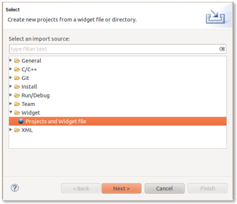
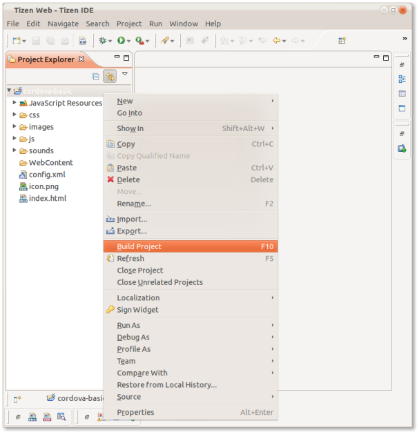
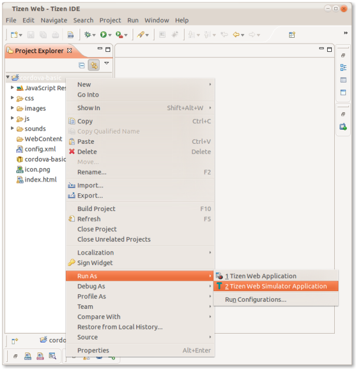
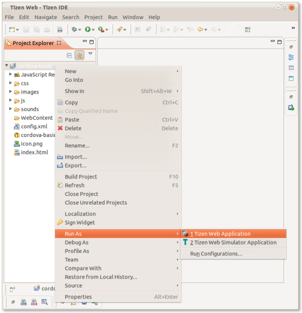

Tizen Platform Guide
This guide describes how to set up your SDK development environment to deploy Cordova apps for devices running the Tizen operating system.
Requirements and Support
The Tizen SDK requires Linux Ubuntu 10.04/10.10/11.04/11.10 (32-bit), or Windows XP SP3/7 (32-bit).
Developers should use the cordova utility in conjunction with
the Tizen SDK. See The Command-Line Interface for information
how to install it, add projects, then build and deploy a project.
Install the SDK
Download the Tizen SDK from tizen.org.
Open a Project in the SDK
Launch the Tizen Eclipse IDE.
-
Select File → Import → Tizen Web Project:

Press Next.
Make sure Select root directory is checked.
Make sure Copy projects into workspace is checked.
-
Press Browse and select the Cordova Tizen
samplesproject directory (such as/cordova-basic):
-
Press Finish. Your project should now be imported and appear in the Project Explorer view:

To rebuild the project, right-click in the Project Explorer view and Select Build Project:

A widget package file such as hello.wgt should generate in the project's root directory.
Deploy to Emulator
Right-click the project in the Project Explorer view and select Run As → Tizen Web Simulator Application:

Deploy to Device
Make sure that the target device is properly launched, connected and configured. Its Date and Time settings must be set correctly.
-
Use the Connection Explorer view to select the application deployment target: Window → Show View → Connection Explorer.

-
Right-click the project in the Project Explorer view, then select Run As & rarr; Tizen Web Application:
